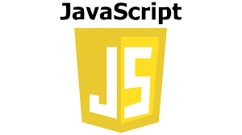

პროგრამირების ენა C შეიქმნა 1972 წელს, მისი შექმნა პირველად დაიწყო 1969 წელს დენის რიტჩის მიერ,
როდესაც ის კენ ტომპსონთან ერთად მუშაობდა Unix ოპერაციული სისტემის დიზაინზე. ძირითადი მიზანი
ამ ენის დაწერისას იყო, რომ C ყოფილიყო მოსახერხებელი პროგრამირებისთვის.

პაითონი წარმოადგენს მაღალი დონის პროგრამირების დინამიურ ენას შესაძლებლობათა ფართო სპექტრით,
რომლის დიზაინი ყურადღებას ამახვილებს კოდის ადვილად წაკითხვადობაზე.პაითონის სტანდარტული
ბიბლიოთეკა დიდია და ყოვლელმხრივი. ის იყენებს ძალზე იშვიათ გამომყოფებს ბლოკებისთვის – აბზაცებს
JavaScript — პროგრამირების ერთ-ერთი ფართოდ გავრცელებული ენაა. სახელწოდება JavaScript, როგორც სავაჭრო ნიშანი დარეგისტრირებულია ფირმა Sun Microsystems, Inc-ის მიერ.
ჰიპერტექსტური აღწერის ენა — ტიმ ბერნერს-ლის მიერ 1993 წელს შექმნილი აღწერის ენა, რომელიც განკუთვნილია ვებ-გვერდების და
საიტების შესაქმნელად და ინფორმაციის გასავრცელებლად ინტერნეტის საშუალებით. HTML დაწერილია HTML ელემენტების ფორმით,
რომელიც შედგება ტეგებისგან, რომლებიც გვერდის შინაარსში მოქცეულია კუთხიან ფრჩხილებში.

კასკადურ სტილთა ფურცლები — სტილთა ფურცლების ენა, რომელიც გამოიყენება მონიშვნის ენით დაწერილი დოკუმენტის წარდგინების აღსაწერად,
მაგალითად HTML-ის გამოყენებით. CSS არის მსოფლიო აბლაბუდის ტექნოლოგიური ქვაკუთხედი, HTML-თან და JavaScript-თან ერთად.